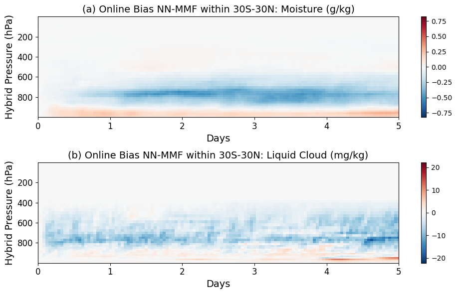

import xarray as xr
import numpy as np
import matplotlib.pyplot as plt
import pandas as pd
import glob
Zonal mean online error growth#
In this notebook, we show how we generate error growth plot, i.e., Figure H1 in “Stable Machine-Learning Parameterization of Subgrid Processes with Real Geography and Full-physics Emulation”, Hu et al. 2024, arXiv preprint:2306.08754.
Set data path#
All the simulation output, saved model weights, and preprocessed data used in Hu et al. 2024 “Stable Machine-Learning Parameterization of Subgrid Processes with Real Geography and Full-physics Emulation” are provided in a hu_etal2024_data folder that you can download. Please change the following path to your downloaded hu_etal2024_data folder.
data_path = '/global/homes/z/zeyuanhu/scratch/hu_etal2024_data/'
# Open the dataset
ds_sp = xr.open_mfdataset(data_path+'first_month_hourly/mmf_ref/*.eam.h2.*.nc')
ds_nn = xr.open_mfdataset(data_path+'first_month_hourly/unet_v5/huber_rop/*.eam.h2.*.nc')
ds_grid = xr.open_dataset(data_path+'data_grid/ne4pg2_scrip.nc')
grid_area = ds_grid['grid_area']
def zonal_mean_area_weighted(data, grid_area, lat):
# Define latitude bins ranging from -90 to 90, each bin spans 10 degrees
bins = np.arange(-90, 91, 10) # Create edges for 10 degree bins
# Get indices for each lat value indicating which bin it belongs to
bin_indices = np.digitize(lat.values, bins) - 1
# Initialize a list to store the zonal mean for each latitude bin
data_zonal_mean = []
# Iterate through each bin to calculate the weighted average
for i in range(len(bins)-1):
# Filter data and grid_area for current bin
mask = (bin_indices == i)
data_filtered = data[mask]
grid_area_filtered = grid_area[mask]
# Check if there's any data in this bin
if data_filtered.size > 0:
# Compute area-weighted average for the current bin
weighted_mean = np.average(data_filtered, axis=0, weights=grid_area_filtered)
else:
# If no data in bin, append NaN or suitable value
weighted_mean = np.nan
# Append the result to the list
data_zonal_mean.append(weighted_mean)
# Convert list to numpy array
data_zonal_mean = np.array(data_zonal_mean)
# The mid points of the bins are used as the representative latitudes
lats_mid = bins[:-1] + 5
return data_zonal_mean, lats_mid
ds2 = xr.open_dataset(data_path+'data_grid/E3SM_ML.GNUGPU.F2010-MMF1.ne4pg2_ne4pg2.eam.h0.0001-01.nc')
lat = ds2.lat
lon = ds2.lon
level = ds2.lev.values
def zonal_mean(var):
var_re = var.reshape(-1,384,var.shape[-1])
var_re = np.transpose(var_re, (1,0,2))
var_zonal_mean, lats_sorted = zonal_mean_area_weighted(var_re, grid_area, lat)
return var_zonal_mean, lats_sorted
calculate the zonal mean bias (NN - MMF) for moisture and liquid cloud#
var = 'Q'
var_sp = ds_sp[var]
var_nn = ds_nn[var]
var_sp_re = np.transpose(var_sp.values, (2,0,1))
var_sp_zonal_mean, lats_sorted = zonal_mean_area_weighted(var_sp_re, grid_area, lat)
var_nn_re = np.transpose(var_nn.values, (2,0,1))
var_nn_zonal_mean, lats_sorted = zonal_mean_area_weighted(var_nn_re, grid_area, lat)
# average in tropics
var_sp_trop = var_sp_zonal_mean[6:12].mean(axis=0)
var_nn_trop = var_nn_zonal_mean[6:12].mean(axis=0)
data_sp = xr.DataArray(var_sp_trop.T, dims=["level", "time"],
coords={"level": level, "time": np.arange(len(ds_sp.time))/24.})
data_nn = xr.DataArray(var_nn_trop.T, dims=["level", "time"],
coords={"level": level, "time": np.arange(len(ds_nn.time))/24.})
bias_q= (data_nn-data_sp)
var = 'CLDLIQ'
var_sp = ds_sp[var]
var_nn = ds_nn[var]
var_sp_re = np.transpose(var_sp.values, (2,0,1))
var_sp_zonal_mean, lats_sorted = zonal_mean_area_weighted(var_sp_re, grid_area, lat)
var_nn_re = np.transpose(var_nn.values, (2,0,1))
var_nn_zonal_mean, lats_sorted = zonal_mean_area_weighted(var_nn_re, grid_area, lat)
# average in tropics
var_sp_trop = var_sp_zonal_mean[6:12].mean(axis=0)
var_nn_trop = var_nn_zonal_mean[6:12].mean(axis=0)
data_sp = xr.DataArray(var_sp_trop.T, dims=["level", "time"],
coords={"level": level, "time": np.arange(len(ds_sp.time))/24.})
data_nn = xr.DataArray(var_nn_trop.T, dims=["level", "time"],
coords={"level": level, "time": np.arange(len(ds_nn.time))/24.})
bias_qc= (data_nn-data_sp)
import numpy as np
import xarray as xr
import matplotlib.pyplot as plt
# Prepare the figure and axes
fig, axes = plt.subplots(nrows=2, ncols=1, figsize=(10, 6))
ax = axes[0]
(bias_q*1e3).plot(ax=ax)
ax.invert_yaxis()
ax.set_xlim(0, 5)
ax.set_title('(a) Online Bias NN-MMF within 30S-30N: Moisture (g/kg)',fontsize=14)
ax.set_xlabel('Days',fontsize=14)
ax.set_ylabel('Hybrid Pressure (hPa)',fontsize=14)
ax.tick_params(axis='both', which='major', labelsize=12)
ax = axes[1]
(bias_qc*1e6).plot(ax=ax)
ax.invert_yaxis()
ax.set_xlim(0, 5)
ax.set_title('(b) Online Bias NN-MMF within 30S-30N: Liquid Cloud (mg/kg)',fontsize=14)
ax.set_xlabel('Days',fontsize=14)
ax.set_ylabel('Hybrid Pressure (hPa)',fontsize=14)
ax.tick_params(axis='both', which='major', labelsize=12)
plt.tight_layout()
# plt.savefig('/global/homes/z/zeyuanhu/notebooks/james-plots/error-growth.pdf', format='pdf', dpi=300, bbox_inches='tight')
# plt.tight_layout()
plt.show()
